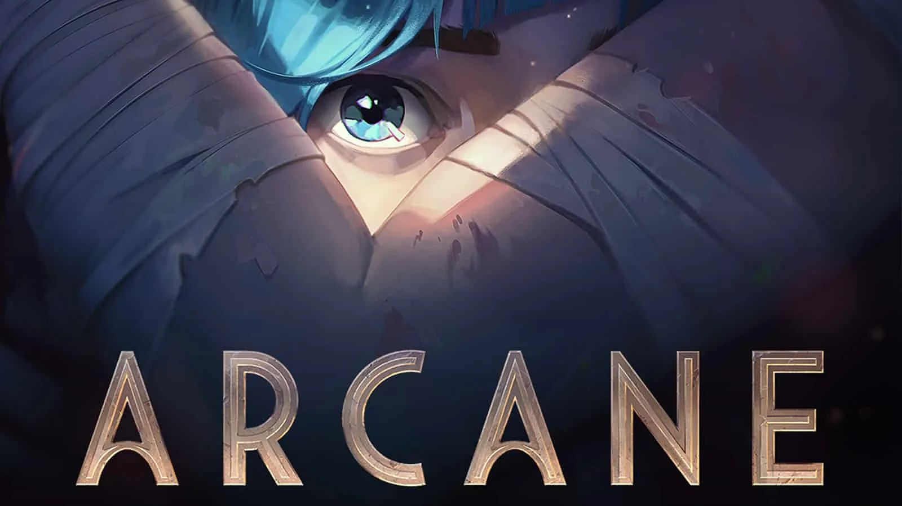

Series de animações recomendadas por minha pessoa. Séries animadas têm o potencial de explorar cada detalhe dos seus próprios universos de maneira única. Diferentemente da realidade,
a animação se beneficia do absurdo e assim consegue entregar piadas, dramas e tensões muito peculiares. Basta lembrar das clássicas e improváveis perseguições envolvendo o Coiote e o Papa-Léguas, apenas para citar um exemplo.
Com tanto potencial, esse formato de narrativa pode ser direcionado para diferentes públicos, inclusive o adulto. Seja pelo conteúdo mais sensível, seja pela trama mais densa e complexa, cada vez mais surgem ótimos exemplos de animações feitas para um público mais velho,
mas sem nunca perder a riqueza de detalhes que as definem.
Quer conhecer mais desse universo? Então acompanhe esta lista com alguns das melhores animações para adultos, de acordo com o IMDb.
Bee and PuppyCat é uma websérie de desenho animado.
Gira em torno de Bee (dublado por Allyn Rachel nos EUA), uma mulher
desempregada com seus vinte anos, que de repente encontra uma criatura misteriosa
chamada PuppyCat (dublado pelo programa Vocaloid Oliver).
Hora de Aventura (April 5, 2010).
A série segue as aventuras de Finn, o Humano e o seu melhor amigo e irmão adotivo Jake,
o Cão; que se aventuram na Terra de Ooo, num futuro pós-apocalíptico por volta de mil anos após a "Grande Guerra dos Cogumelos",
sendo Finn presumidamente o último humano existente.
A viagem de chihiro (July 18, 2003).
Chihiro e seus pais estão se mudando para uma cidade diferente. A caminho da nova casa, o pai decide pegar um atalho. Eles se deparam com uma mesa
repleta de comida, embora ninguém esteja por perto. Chihiro sente o perigo, mas seus pais começam a comer. Quando anoitece, eles se transformam em porcos.
Agora, apenas Chihiro pode salvá-los.
The Midnight Gospel (April 20, 2020).
The Midnight Gospel é uma série animada de ficção científica estadunidense,
sobre entrevistas de temas filosóficos reais, criada por Pendleton Ward e Duncan Trussell,
lançada na Netflix em 20 de abril de 2020. É a primeira produção animada de
Ward para a rede de streaming.

Arcane (November 6, 2021).
Arcane (oficialmente intitulada como Arcane: League of Legends)
é uma série de televisão animada de streaming, dos gêneros ação e aventura,
criada por Christian Linke e Alex Yee e distribuída pela Netflix. O show, produzido pela
Fortiche sob a supervisão da Riot Games é ambientado no universo
fictício de League of Legends e sua trama é focada nas irmãs Vi e Jinx.
Bojack Horseman (August 22, 2014)
BoJack Horseman é uma série de animação adulta de comédia dramática americana criada
por Raphael Bob-Waksberg. A série é estrelada por Will Arnett como o personagem principal,
BoJack Horseman. O elenco secundário também inclui Aaron Paul, Amy Sedaris, Alison Brie, Paul F.
Tompkins e Minae Noji. A primeira temporada da série estreou em 22 de agosto de 2014, na Netflix.